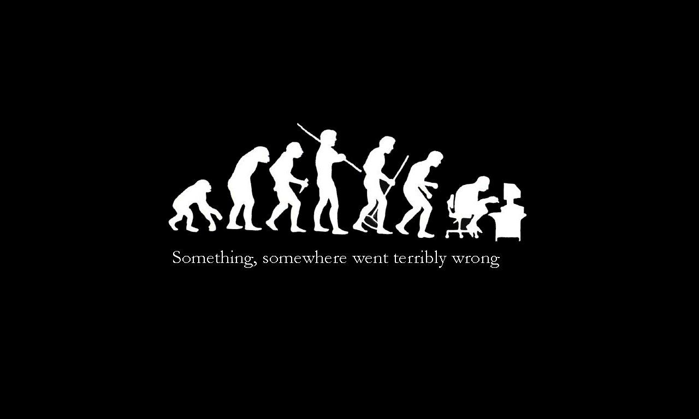
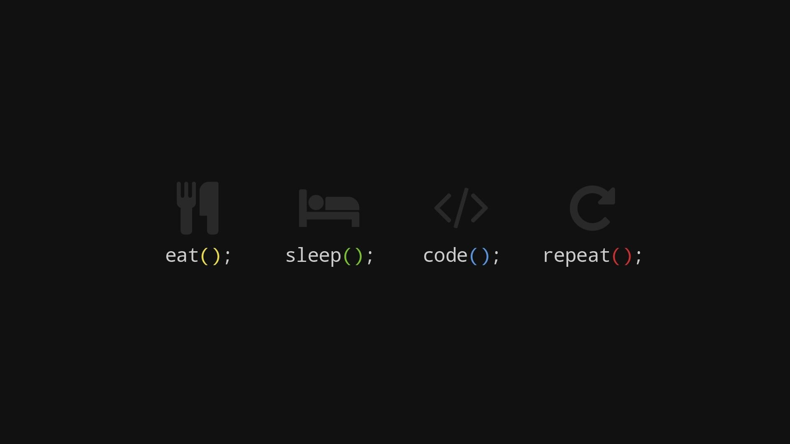

linguagens
O HTML

É uma linguagem de marcação utilizada para desenvolvimento de sites. Esta linguagem surgiu junto com o HTTP, ambos possibilitaram a internet ser popularizada.
Historia
O HTML foi criado em 1991, por Berners-Lee, no CERN (European Council for Nuclear Research) na suíça. Inicialmente o HTML foi projetado para interligar instituições de pesquisa próximas, e compartilhar documentos com facilidade. Em 1992, foi liberada a biblioteca de desenvolvimento WWW ( World Wide Web), uma rede de alcance mundial, que junto com o HTML proporcionou o uso em escala mundial da WEB.
Como funciona
O HTML é uma linguagem de marcação. Estas linguagens são constituídas de códigos que delimitam conteúdos específicos, segundo uma sintaxe própria. O HTML tem códigos para criar paginas na web. Estes códigos que definem o tipo de letra, qual o tamanho, cor, espaçamento, e vários outros aspectos do site. No início era muito complicado aprender HTML, pois eram muitos comandos para fazer algo simples. A cada nova versão, o HTML fica mais fácil de utilizar, e adquire mais funções. Atualmente qualquer pessoa pode acessar a internet a aprender a construir um site básico em questão de horas, seguindo os passos de tutoriais e aprendendo as funções de cada código.
Não é a linguagem de programação que define o programador, mas sim sua lógica.